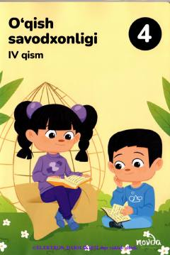

4S4-sinf o'quvchilari uchun o'qish savodxonligi darsligining to'rtinchi qismi.
Ushbu darslik umumiy o'rta ta'lim maktablarining 4-sinf o'quvchilari uchun mo'ljallangan bo'lib, o'qish savodxonligini oshirishga qaratilgan matn va topshiriqlarni o'z ichiga oladi. Kitobda turli badiiy parchalar, rivoyatlar va mantiqiy savollar berilgan.